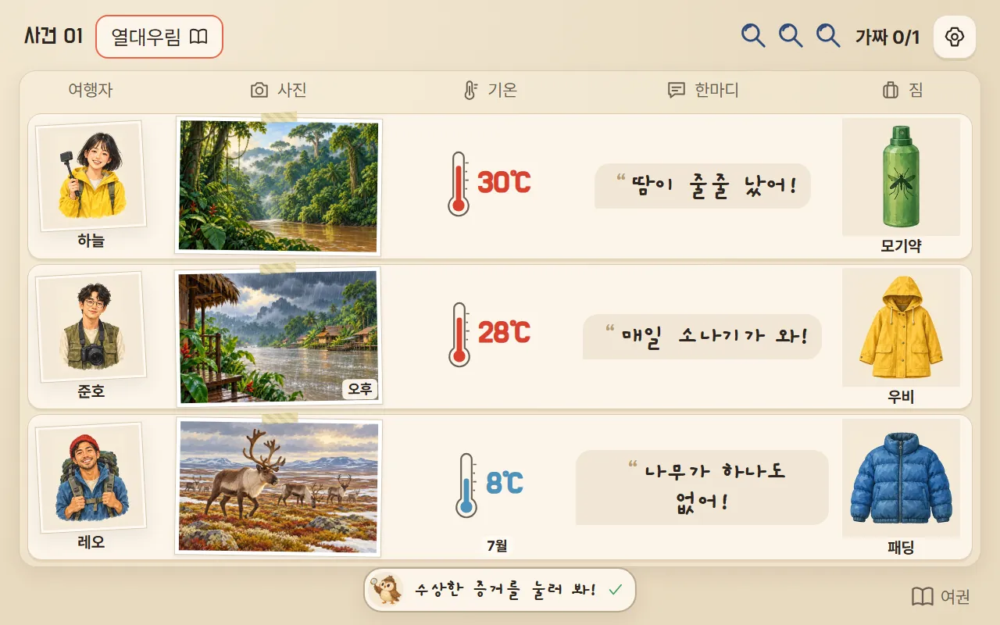

1234
12341
대회 준비
여행자 한 명을 골라 내가 되고, 대회를 골라요. 2등 안에 들면 다음 대회가 열려요.
- 1게임 방법 4장면
- 2나는 누구?
- 3대회 고르기동네 → 전국 → 세계
- 4친구와 하기준비 중
더 지니어스 라이어 게임처럼! 닮은 기후에서 온 라이어를 찾아라

5라운드 동안 라이어를 맞히고, 내가 라이어일 땐 들키지 않아 점수을 가장 많이 모으기!
🃏모두 같은 기후에 다녀왔다고 말해요. 그중 한 명(가끔은 나!)은 닮은 기후에서 온 라이어예요.
1234여행자 한 명을 골라 내가 되고, 대회를 골라요. 2등 안에 들면 다음 대회가 열려요.
 123
123라운드마다 여행지가 바뀌어요. 특징을 기억해요.


진짜 여행자면 증거로 진짜임을 보여 주고, 라이어면 들키지 않게 버텨요.
왼쪽: 진짜 여행자 · 오른쪽: 라이어(사실은 다른 기후)
 123456
123456돌아가며 한 장씩, 모두 3바퀴. 내 차례에 카드를 골라 [이 카드 내기].
 1
1다른 여행자들이 카드를 보고 의심하거나 믿어요. 성격마다 반응이 달라요.
 1
13바퀴가 끝나면 라이어라고 생각하는 사람을 골라요.
 1234
1234라이어가 밝혀지고 점수이 오가요. 배움 카드로 두 기후의 같은 점·다른 점을 확인해요.
★맞히면 +2 · 엉뚱한 사람 −1 · 억울하게 지목 −2 · 라이어가 안 들키면 +4
 12
125라운드가 끝나면 점수 순서대로 순위와 칭호가 나와요.


이 칸은 수업을 준비하는 선생님을 위한 내용이에요.
6학년 사회 · 세계의 자연환경 — 여러 기후(열대·건조·온대·냉대·한대·고산)의 특징과 비슷한 기후끼리의 같은 점·다른 점